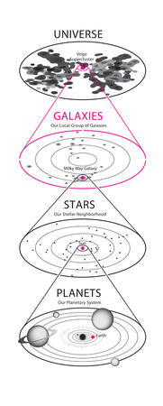

In the early universe, there were no galaxies. Today, there are many billions. How did they form? Astronomers use the fundamental laws of physics to deduce the basic story of galaxy formation. Galaxies form out of immense clouds of gas that collapse and rotate. As they evolve, stars form within them. Entire galaxies can collide, changing their appearance. Looking deep into space, we see galaxies at earlier stages in their lives, and learn more about their evolution. They are more numerous, display unusual shapes, and have episodes of energetic outbursts. Galaxies can be seen back to more than 10 billion years ago.
